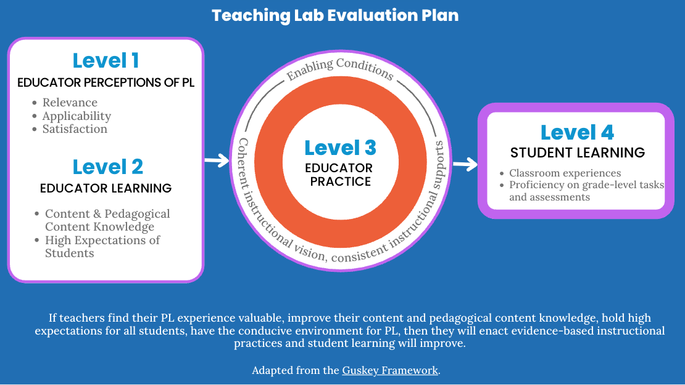
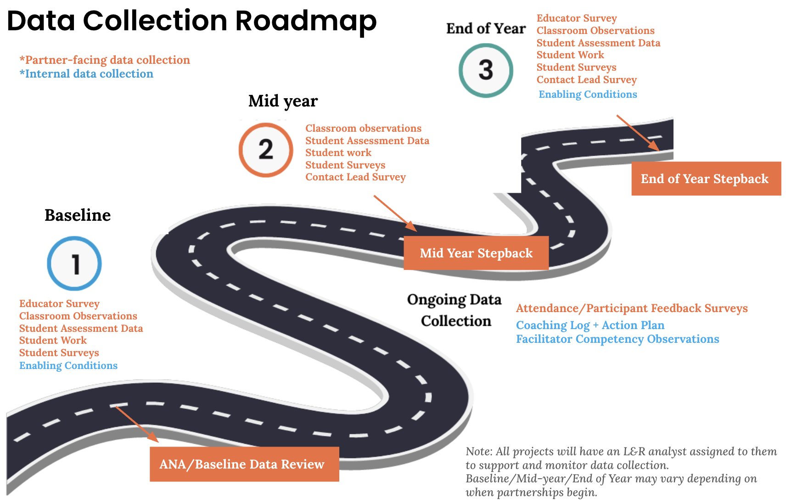
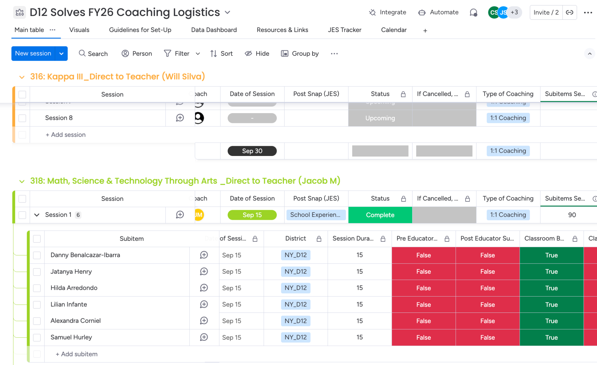

Data Collection Overview
This document serves as your one-stop resource for all project team data needs, providing high-level overviews with links to detailed resources. For questions, contact your assigned L&R Analyst or the L&R Team at (research@teachinglab.org). Also review your project-specific data plan for project-specific nuances in data collection expectations.
What You’ll Find in This Guide
Teaching Lab Evaluation Plan
Teaching Lab’s evaluation plan is grounded in the Guskey Framework, a widely recognized approach for evaluating professional learning. Our evaluation plan and the visuals below, taken from this deck, explain how we have adapted Guskey’s framework to our work.

Below is a general data collection roadmap for projects that run for the full school year. For projects that start later or follow a different timeline, “mid-year” and “end-of-year” may be interpreted as mid- and end-of-partnership to reflect the actual project schedule.

Data Collection Expectations by Scope of Work
General data collection guidance by scope of work is provided below. Refer to your individual data collection plan in your project’s Monday.com workspace for project-specific plans and nuances.
| Teacher Coaching | Teacher PL | School Leaders | |||
|---|---|---|---|---|---|
Service |
High Dosage 1:1 Coaching, group coaching/PLCs |
Low Dosage 1:1 Coaching, group coaching/PLCs* |
High/Moderate Dosage |
Low Dosage* |
School Leader Support |
Frequency |
Weekly, biweekly, monthly with the same Ts |
Less than monthly with same Ts |
≥4 sessions |
Light scopes such as 1-day PL or PL with different Ts |
Any |
Attendance/ Participant Feedback |
✅ |
✅ |
✅ |
✅ |
✅ |
Educator Survey |
✅ |
✅ |
✅ |
Not required |
✅ |
Observations/ Walkthroughs |
✅ |
Recommended for a sample of Ts |
Recommended for a sample of Ts |
Not required |
✅ |
Student Work |
Collected and analyzed through coaching cycles in Nisa Project teams can choose to submit to to L&R for centralized grading if needed |
Recommended to collect and submit to L&R for centralized grading |
Not required |
Collected and analyzed through coaching cycles in Nisa |
|
Ss Assessment Data |
✅ |
✅ |
✅ |
Not required |
✅ |
Student Survey |
Recommended |
Recommended |
Recommended |
Not required |
Recommended |
✅ indicates expected data collection activity. *To maximize impact, we should prioritize higher-leverage scopes.
Quick Links Guide
| WHAT | WHEN | WHO | LINKS | RESULTS | |
|---|---|---|---|---|---|
Professional Learning/Coaching Participant Roster |
BOY |
CPM/ Coach |
|||
Attendance/ Participant Feedback |
Ongoing |
Participant |
Participant Link: http://tinyurl.com/TL-feedback Internal Review/Testing: Qualtrics External Sharing of Content: Google Doc |
||
Educator Survey |
BOY EOY |
Participant |
Participant Link: https://tinyurl.com/TLEducatorSurvey Internal Review/Testing: Qualtrics External Sharing of Content: Google Doc |
||
Classroom Observations |
BOY MOY EOY |
Coach |
Link: https://tinyurl.com/TLobservations Internal Review/Testing: Qualtrics External Sharing of Content: Google Doc |
||
Student Assessment Data |
BOY MOY EOY |
PL/CPM |
TBD |
||
Student Work |
BOY MOY EOY |
Coach/ Participant |
Link: https://tinyurl.com/TLstudentwork Internal Review/Testing: Qualtrics |
||
Student Survey |
BOY EOY |
Students of Participant |
L&R Team will send participants individualized survey links using the participant list from project teams. Internal Review/Testing: Qualtrics External Sharing of Content: Google Doc |
||
Contact Lead Survey |
MOY EOY |
Main Partner Contacts |
Link: https://tinyurl.com/TLContactLead Internal Review/Testing: Qualtrics External Sharing of Content: Google Doc |
||
Enabling Conditions Rubric |
BOY EOY |
PL/CPM |
Link: https://tinyurl.com/TLenabling Internal Review/Testing: Qualtrics External Sharing of Content: Google Doc |
||


| WHAT | WHEN | WHO | LINKS | RESULTS | |
|---|---|---|---|---|---|
Facilitation Competency Observation |
Ongoing |
PL/CPM/ Coach Developer |
Link: https://tinyurl.com/FacilitationCompetency Internal Review/Testing: Qualtrics External Sharing of Content: Google Doc |
Participant Perception Dashboards on the Data Hub |
|
Coaching Log |
Ongoing |
Coach |
Link: Coaching Log Form |
||

Tracking Data Collection Progress & Key Outcome Metrics
Please refer to the FY27 Data Collection Tracker to monitor data collection completion rates. The tracker includes:
- Overall completion rates for all projects in the Project Overview tab.
- Individual project tabs, each showing a participant-level breakdown of which participants have completed which data collection activities.
Filtering the Data Collection Tracker
To protect the integrity of the tracker, general users have comment-only access. This means you cannot apply a traditional filter directly to the sheet, since doing so would change the view for everyone else. Instead, you’ll need to use a filter view, which lets you filter and sort data without affecting what other users see.
How to create a filter view:
- Click the Data tab at the top of the sheet.
- From the dropdown, select Create filter view.
- Use the header row to set up your filter criteria.
By using a filter view rather than a standard filter, you can look at the exact data you need while ensuring that the tracker remains stable and accessible for all users.
Where to Access the Tracker
Please visit the L&R section of the TL Team Hub to access the FY26 Data Collection Tracker.
Assets & Needs Assessments (ANA) Data Collection Guide
Teaching Lab’s Assets & Needs Assessment (ANA) is the first step in identifying the most strategic focus areas for our work with a new partner, enabling tailored service design, building partner confidence in our data-driven approach, and equipping project teams with essential context before implementation begins.
❗Important:
🏫 Which partners engage in the ANA data collection activities? All new partners complete the qualitative ANA activities listed below, along with any baseline data collection relevant to their scope of work (e.g., Educator Survey, walkthroughs/observations, student work, student assessment data review). For returning partners, we recommend conducting an ANA when new schools or participants are part of the project.
📆 When does the ANA happen? Some first-year partners may contract the ANA as a stand-alone service before a full scope of work is developed (e.g., ANA in the spring, services beginning in the fall). For others, ANA activities take place alongside early baseline data collection at the start of the partnership.
| WHAT | WHO | LINKS | RESULTS |
|---|---|---|---|
ANA Leader Interviews |
Project Leads/CPMs |
Interview Questions - make a copy |
Make a copy and save in partner folder |
Teacher Interviews/Focus Groups* |
Project Leads/CPMs |
Interview/Focus Group Questions - make a copy |
Make a copy and save in partner folder |
Analysis of Artifacts |
Project Leads/CPMs |
Standard versus Comprehensive ANA instructions - artifacts are on page 9 Artifact analysis guide– make a copy |
Save copies of artifacts in partner folder |
*While it is not always possible to facilitate a teacher touchpoint with all partners, we strongly recommend doing so to more authentically capture the teacher perspective.
Student Data Collection
Teaching Lab collects three main types of student data to measure student outcomes: student assessment data, student work samples, and student surveys. Together, these sources help us identify growth areas, strengthen our approach, and assess impact.
❗ For the full student data collection guide, please reference this resource.
📊 Student Assessment Data
Student assessment data is our top priority because it provides the most comparable measure of learning. We prioritize standardized screeners, benchmarks, and summative tests (e.g., Acadience, MAP, i-Ready, state tests); when these are unavailable, we rely on curriculum-embedded or formative assessments. Ideal datasets include Teaching Lab-supported and unsupported groups (classrooms, schools, districts) for comparison.
✍️ Student Work Collection
Student work samples provide insight into how learning develops across partnerships. Starting in FY27, for high-dosage coaching projects, student work will primarily be reported on in Nisa as part of the coaching cycle. Centralized student work collection and grading is still available as an option for projects that need it (for example, if project goals or KSIs include specific student outcome measures that require standardized grading or analysis.) Centralized grading should be planned with the L&R Analyst during project design.
For student work submitted to L&R for centralized grading, all work samples must be on-grade level; come from the HQIM or otherwise be standards-aligned; and represent a task that evidences student thinking.
📝 Student Surveys
Student surveys capture firsthand perspectives of their learning and classroom experiences, complementing assessments and work samples. Administered twice a year in grades 3–12, they are anonymous, bilingual (English/Spanish), and take ~15-20 minutes. Surveys ask about the work students do and how they feel about learning. Results are aggregated to highlight patterns and inform improvement.
Data Review and Stepback Resources
What are Data Reviews and Stepbacks? Stepbacks are formal meetings with each partner that happen periodically three times throughout the year (see below for exact timeline). The purpose of a Stepback is to revisit/realign on partnership goals, review data that demonstrates progress towards those goals, and to discuss future strategy based on the data.
When do Data Reviews and/or Stepbacks occur? In a standard, year-long partnership, there are three stepbacks. One occurs at the beginning of the year (“baseline”), one in the middle of the year (“mid-year”), and one at the end of the year (“end-of-year”). If a partnership starts later into the year, such as midway through the year, they may only have two stepbacks (“baseline” when they begin and “end-of-year” at the end of the school year).
What is the goal of each data meeting?
- ANA/Baseline Data Review: Informs service delivery and strategy
- Mid-Year Stepbacks: Informs pivots and refinements in services and strategy
- End-of-Year Stepbacks: Informs future planning and service offerings
How do I prepare for a Stepback?
| 6 weeks before stepback | 3-4 weeks before stepbacks | 2-3 weeks before stepbacks | 1-2 weeks before stepbacks | By Stepback |
|---|---|---|---|---|
CPM/PL enters (estimated) stepback date in team logistics boards in Monday.com. Allow 2–3 weeks for L&R prep of the stepback deck. |
CPM/PL completes planning tool to align data story with partnership goals. For MOY/EOY: CPM/PL send Contact Lead Survey to partner leads |
L&R completes data section of deck. Program team completes intro + closing sections. |
L&R + Program team revise deck together to craft the partner data story (strengths + growth areas). |
For BOY/EOY: Project team completes enabling conditions rubric for partner. |
Work to collect missing/additional data —--------------------------------------------->> |
||||
Important Links:
Analyzing & Sharing Data
As a learning organization, we are all committed to collecting and utilizing high quality data to inform our practice. While the L&R team is responsible for providing access to data results and initial analyses, program teams are responsible for integrating these results into their practice, ideally analyzing and sharing data consistently throughout the year to inform their work with facilitators and partners.
The L&R team created a guide that offers instructions on how we recommend integrating data into your practice. We provide steps, tips, and resources on how to meaningfully analyze and share each key piece of data that is available to you. You can access the Analyzing and Sharing Data Guide guide here. On the first page is a link to each piece of data that we collect and that is available for analysis and sharing. If you have any questions or would like support, don’t hesitate to reach out to an L&R team member for support! We are here to ensure data is easily accessible and useful to you.
FAQ
Beginning of Year Data Collection and Tracking FAQs
- (Coaches) What do I do if my teacher/admin names are not showing up in the coaching log?
- Check if they are rostered: SY26-27 Participant Roster Monday Board
- If they’re not, work with your CPM to get them rostered via Single Entry Form or bulk upload.
- (Coaches) What do I do if my teacher/admin names are not showing up in the Classroom Observation Form?
- If they’re not rostered, see instructions above.
- If they’ve been rostered for at least 24 hrs, they should be listed in the IPG. If you don’t see their names, it’s likely because Qualtrics saves your browser history & remembers where you left off. Try these workarounds:
- Select “Other” and type in the teacher name
- Complete the survey in Incognito Mode
- Open a new survey in a different browser
- (Project Teams) How do I track BOY data completion?
- The Coaching Data Collection Tracker is live! So you can track data collection by coachee in this spreadsheet (assuming they're rostered)
- We have data collection tracking columns in the Coaching Logistics boards as well - they should auto-update after coaching logs are submitted (assuming the dates match the logistics boards).
- This reflects what participants have completed up to the date the log is submitted (e.g., a log submitted on 9/23 shows data completion through 9/23).
